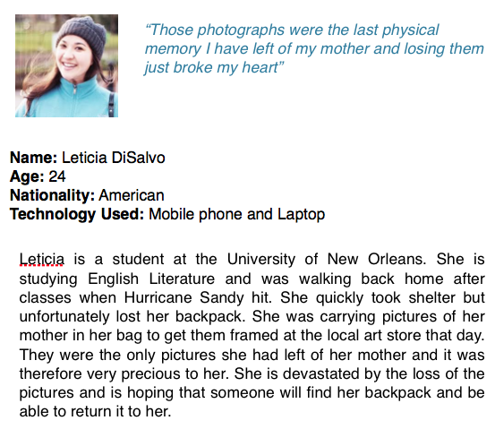

I worked on a prototype for a lost and found application to help people locate their mising belongings following a disaster.
TaskThe destruction of a tornado or hurricane is horrific. The power of storm surge and flood water flow is awesome. The water and huge winds can result in objects being picked up and carried for miles. SearchMe is a system for helping people locate their missing belongings following such a disaster.
- It is a distributed Lost and Found system. It supports reporting and cataloging items as well as reporting losses, and searching for lost items (“Missing- three garden gnomes, four feet tall, green colour”).
The information in the application is through crowdsourcing.
- It would be activated by FEMA in an emergency situation wherever disaster strikes to help facilitate the storage of lost items.
- It is a web-based application that can be deployed on a mobile or desktop platform. It will also be accessible through a kiosk. It should not rely on a single central person who does the pattern matching. That should be distributed, automated, or both.
- The system will notify the user upon discovering a potential match and give details about who he/she should contact.
Comparative Analysis Facebook pages that try to act as a lost and found are not sufficient because it is very hard for a person to scour through tons of posts to try and locate each of his items. A more personalised application that lets you keep track of your lost items and get notified if someone finds them is much more convenient. The user should be able to broadcast details about the items he has lost and be notified if someone find it so that he can be reunited with his belongings. Pets, Photographs etc. have a high personal value and being able to find the owners and ensure the objects return to is the main goal of this application.
Users
The users of ‘SearchMe’ will be people who have recently been affected by any kind of disaster such as a hurricane, tornado, earthquake, tsunami etc. They need to be able to locate their personal belongings which may now be miles away and completely inaccessible to them because they do not know where to look. They are devastated by the loss of their things and the psychological impacts of the disaster can be truly horrific. They need to be able to quickly create an inventory of the items that they have lost and also keep track of the items that they have found and which may belong to other people.
Personas

Design
I started by drawing up a rough wireframe of the application in Balsamiq in order to flesh out the idea and make sure that I wasn't missing any important information.
“SearchMe” is a mobile and desktop application that can also be accessed through a kiosk that will be set up in select locations depending on where the disaster strikes. The kiosks will be quick and easy to set up as this will be a cross platform application that can be setup in a few minutes on any kind of mobile or desktop platform. Users will normally be using their cellphones to access SearchMe as it is the most accessible device and the application is easy to use and very efficient.
The application will open with a sign in page so that each user can keep track of the items that they have either lost or found. If the users have not created an account they can do so by clicking on sign up. The reason the application creates profiles for users is to add a level of security by verifying their phone number and also allowing then to keep inventory of the items. The sign up process is easy and uncomplicated as it requires only four fields and hence does not take too much time to fill in. Because the users are going to be stressed and want the process to be as fast as possible this would be a good design.

As this application is dealing with personal belongings, verification is required to ensure that they are the legitimate owners of the items. As the phone number is secure and attached to a credit card, it is the best way to provide verification and confirm that they are authentic users.

- Selection of Lost and Found Items
In order to report lost items, found items or change your profile and contact settings, the user can select three options from a drop down list.

In order to report lost items the user simply has to click on a plus sign on the top right hand corner of the ‘Lost’ screen. It will allow the user to add in items based on categories that are easy to identify. The page will then display a visualisation of various items matching the description that have been found by other people in the vicinity. Upon tapping the item on the map the user can see who reported the item, when they reported it and where they left the item to be collected. The application assumes that an agency such as FEMA has set up temporary holding structures for storing various items that have been reported lost and have been found by other people at least for a few months after the disaster has taken place to allow people access to their belongings if found. Users can also add a picture of the item they lost if they have one. The search function allows users to see what they have lost and keep track of it. The search function allows them to look up keywords in items they have reported as lost.

In order to see which items belonging to the user others have found, the user simply needs to tap on Map items. The purple dots indicate the items that have been found by others and that may match the users lost items description. Tapping on the dot gives more details about who found the item, when and where the item currently is. It also gives the user the option to call the finder and ask for more details about the item. This ensures that it is the right item and the user doesn’t waste time by going to the location to pick up an item that may not belong to him.

The user of the application can report items that he finds that may belong to other people. He can tag where he found the item and when and also let people know where he left the item to be picked up. The user can also select what category an item falls under so that it is easy to search. When adding found items, the user can also add a picture of the item they found.

The user can edit his settings and preferences. He can choose whether he would like to be alerted about an ‘found ’ item matching his ‘lost’ item description and how he should be alerted of the same (text message or email). He can also choose to appear as anonymous to other users. The mobile phone number will also be used by FEMA to alert the user in case of another impending emergency situation.

After drawing up the wireframe I used proto.io in order to create a high fidelity prototype of the SearchMe application. It offered good offered a good level of customisability. It seemed to be the best application to prototype SearchMe because it didn’t have a very high learning curve unlike Axure but still allowed me to demonstrate all the various features of the application.
The process of prototyping the app was time consuming but very engaging and fulfilling. In the ideation phase the only thing I concentrated on was the functionality of the application and the various things I wanted to include in it. As I began to prototype it however, the interactions and ease of use came into play. I had to focus on maintaining consistency throughout the application and keeping it very simple so that users of all ages could navigate through it without much difficulty. Because the application is going to be used following a disaster it was essential to maintain a low learning curve and ensure that the application was easy to use. I decided to use a tab bar to allow users to quickly switch between the three main features that the application provided. I didn’t want them to navigate through multiple screens to get to the information that was vital for them.
The found tab is the first tab that is active when the user successfully logs in. In this tab the user can see the various items that he has found and reported. On clicking the ‘+’ icon in the top right hand corner he can add a new item that he has found. The items are categorised according to type. The user can add an image, description, type as well as the item’s current location by clicking on any of the items in the list that is provided under the add items functionality.


The lost tab is allows the user to see which items he has previously reported as lost and even provides a search option so that he can search certain keywords to easily find an item when he has many reported lost items and cannot possibly scroll through all of them. On clicking the ‘+’ icon in the top right hand corner he can add a new item that he has lost. The items are categorised according to type. The user can add an image, description and type by clicking on any of the items in the list that is provided under the add items functionality. The options that appear upon clicking all of these various list items are similar to the options available upon adding a found item and hence I haven’t included screenshots of the same. The options are however completely functional in the prototype and clicking on them will direct the user to the appropriate screens.

On clicking the icon on the top left hand corner (the exclamation point inside the triangle), the user can view potential matches that the system has found. These matches include the items that the system believes could possibly be the users. This is done by matching the keywords and the item types and displaying all the potential matches so that the user can scroll through them and see if any of the items belong to him. A search bar is provided for ease of use and finding the items. Upon clicking the show on Map button, the user is taken to a screen that displays the potential matches on a map with location pins. Once the user taps on a particular location pin he can get directions to that item.

- Directions to selected item
On selecting a particular items location pin on the map the user can click on the get directions button to get a detailed description of how to get to the item. The application uses google maps to allow the application a high level of accuracy and ensure that the user reaches the item as fast as possible.

The settings tab allows the user to decide how he should be contacted upon knowledge of a potential match. He can also choose if he wanted to be notified about a potential match or not. If the user is uncertain about what ‘Notify me about matches’ includes, clicking on the little ‘i’ icon besides it that indicates information. Therefore the app is simple and intuitive to use and allows the user to quickly and easily add items as well as view matches therefore facilitating quick recovery of lost items.
 Conclusion
Conclusion
I designed the application keeping in mind that the users were those who were under great emotional distress following a natural disaster and more than anything else they would be worried about recovering things important to them such as their pets with ease and without unnecessary and frustrating paperwork or having to put up lost and found posters all over town. I wanted to leave the information required as minimal as possible and make the sign up process efficient and easy. I also kept the number of tabs minimal so that it is easy to navigate through the application.
Here is a video of the final prototype I designed: